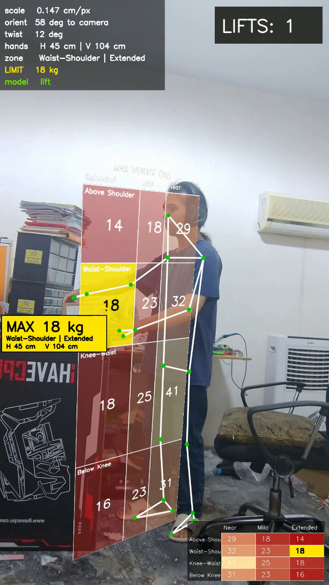
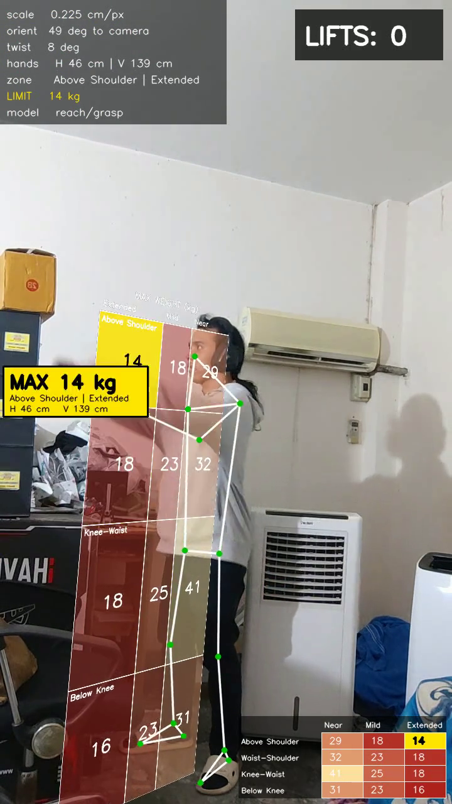
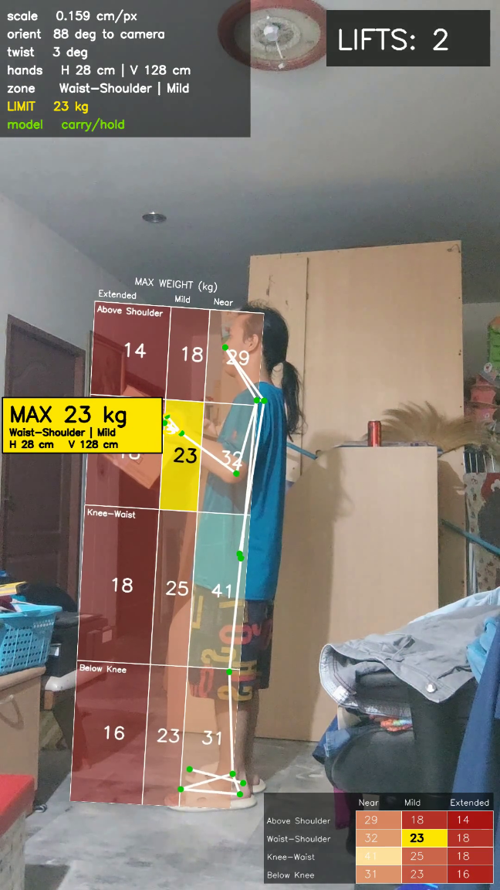
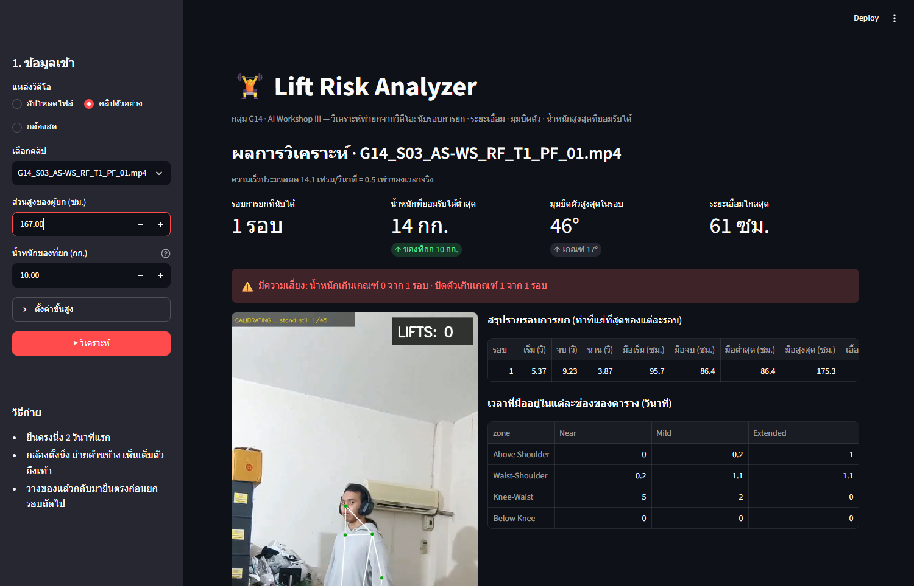
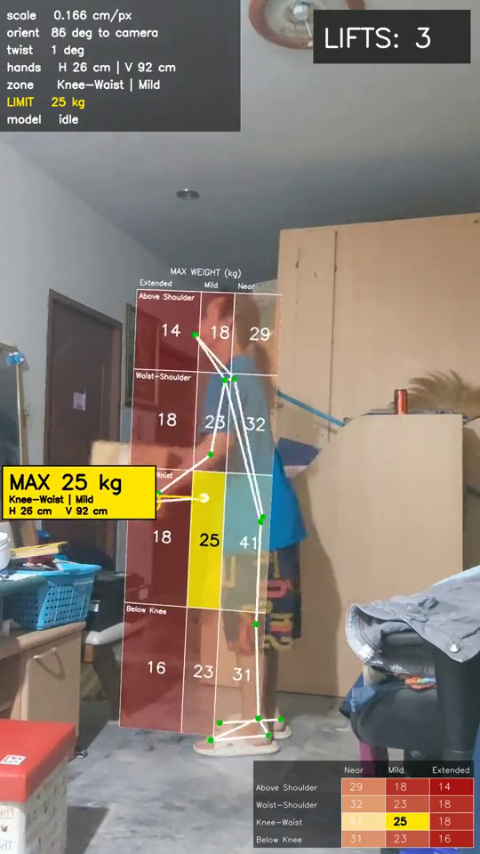

AI WORKSHOP III · กลุ่ม G14
วิเคราะห์ความเสี่ยงของการยกจากวิดีโอ: นับรอบการยก ระยะเอื้อม มุมบิดตัว และน้ำหนักสูงสุดที่ยอมรับได้
CP413705 การฝึกปฏิบัติงานปัญญาประดิษฐ์ 3 · วิทยาลัยการคอมพิวเตอร์ มหาวิทยาลัยขอนแก่น
โจทย์
1
นับจากความสูงมือ โดยให้โมเดลที่กลุ่มเทรนเองยืนยันว่ามีของในมือ
2
มือสูงจากพื้นเท่าไร เอื้อมไกลจากข้อเท้าเท่าไร และลำตัวบิดกี่องศา
3
เทียบตำแหน่งมือกับตารางน้ำหนักสูงสุดที่ยอมรับได้ 3×4 ช่อง
G14 · Lift Risk Analyzer
2
วิธีทำงาน
MediaPipe แล้วลดการสั่นด้วย Kalman
สูตรคำนวณ ไม่มีการเทรน ใช้ส่วนสูงผู้ยกตั้งสเกล
ตำแหน่งมือแบบ NIOSH และตาราง 3×4
เทรนจากคลิปของทุกกลุ่ม ดู 60 เฟรมล่าสุด
กิจกรรม 5 แบบ โหวตจาก 9 เฟรม
นับรอบเมื่อมือขยับออกจากระดับยืนนิ่งและโมเดลยืนยัน แล้วสรุป หนึ่งแถวต่อหนึ่งรอบ ด้วยท่าที่แย่ที่สุดของรอบ
G14 · Lift Risk Analyzer
3
การคำนวณ 1 · ความสูงมือและระยะเอื้อม
ไหล่
เอว
เข่า
O
V ความสูงมือ จากพื้น
H ระยะเอื้อม จาก O ถึงมือ
1
ซม. ต่อพิกเซล = (ส่วนสูง × 0.905) ÷ ระยะพื้นถึงจมูกในภาพ
วัดตอนยืนตรง 1.5 วินาทีแรก · 0.905 คือสัดส่วนความสูงจมูกต่อส่วนสูง
2
หาตำแหน่งกล้องที่ทำให้โครงร่าง 3 มิติฉายลงภาพแล้วตรงกับจุดในภาพ
ใช้ solvePnP ของ OpenCV · ระยะโฟกัสคิดจากมุมมองกล้อง 70°
3
V = ระยะแนวดิ่งจาก O ถึงมือ · H = √(ด้านหน้า² + ด้านข้าง²)
O = กึ่งกลางข้อเท้าที่ระดับพื้น · มือ = ค่าเฉลี่ยข้อมือและโคนนิ้วของสองมือ
นิยาม V และ H ตาม NIOSH Lifting Equation · สูตรจากไฟล์ตัวอย่างของอาจารย์
4
การคำนวณ 2 · มุมบิดตัวและน้ำหนักสูงสุด
แนวไหล่
แนวสะโพก
มองจากด้านบน มุมระหว่างแนวไหล่กับแนวสะโพก คือการบิดของลำตัว
ข้อ 1 มุมไหล่เทียบสะโพก − ค่าตอนยืนตรง เกิน 17°
ข้อ 2 แนวไหล่หมุนเทียบกับพื้นภายในหนึ่งรอบ เกิน 50°
เข้าข้อใดข้อหนึ่ง = เตือนบิดตัวในรอบนั้น
| ความสูงมือ V | H ไม่ถึง 18 | 18 ถึง 30 | เกิน 30 ซม. |
|---|---|---|---|
| เหนือไหล่ | 29 | 18 | 14 |
| เอวถึงไหล่ | 32 | 23 | 18 |
| เข่าถึงเอว | 41 | 25 | 18 |
| ต่ำกว่าเข่า | 31 | 23 | 16 |
แถว: เทียบ V กับระดับเข่า เอว ไหล่ ของผู้ยกเองที่วัดตอนยืนตรง โดยเอว = สะโพก + 0.30 × (ไหล่ − สะโพก)
คอลัมน์: แบ่งค่า H ที่ 7 และ 12 นิ้ว (18 และ 30 ซม.)
ตารางจากไฟล์ตัวอย่างของอาจารย์ ตัวเลขตรงกับ Lifting Calculator ของรัฐวอชิงตัน (หน่วยปอนด์ แปลงเป็นกิโลกรัม) · ข้อ 2 กลุ่มเพิ่มเอง
5
เส้นทางที่ 2 · โมเดลของกลุ่ม
132 ตำแหน่งและความมั่นใจของ 33 จุด
20 ความเร็วของ 10 จุด: ไหล่ ข้อมือ สะโพก เข่า ข้อเท้า
14 มุมข้อศอก สะโพก เข่า ลำตัว และอัตราการเปลี่ยน
เท่ากับ 2 วินาที เลื่อนไปทีละเฟรม
ขนาด 64 พารามิเตอร์ราว 84,000 ตัว
ยืนเฉย · เอื้อมจับ · ยก · วาง · ถือ
325 คลิปของทุกกลุ่ม แบ่งตามตัวบุคคล เพิ่มสำเนากลับซ้ายขวา · ชุดทดสอบถูก 45% (macro-F1 0.43)
ทดลอง 5 แบบ (LSTM, GRU, Transformer) เลือกแบบที่คะแนนชุดตรวจสอบสูงสุด: ขนาด 64, 2 ชั้น, dropout 0.3, อัตราเรียนรู้ 0.001
ถ้าตอบ ยก วาง หรือถือ ถือว่ามีของในมือ ไม่ใช้นับรอบโดยตรง
ตำแหน่งจุดปรับให้สะโพกเป็นศูนย์กลางและหารด้วยความยาวลำตัว · โมเดลจาก Workshop 12 ของกลุ่ม
6
ค่าตั้งต้นและที่มา
| ค่า | ค่าตั้งต้น | ที่มา | ค่าที่กลุ่มใช้ และผล |
|---|---|---|---|
| สัดส่วนพื้นถึงจมูกต่อส่วนสูง | 0.905 | ไฟล์ตัวอย่างของอาจารย์ | คงเดิม |
| ช่วงยืนตรงเพื่อตั้งสเกล | 1.5 วินาที | ไฟล์ตัวอย่างของอาจารย์ | คงเดิม |
| มุมมองกล้อง | 70° | กล้องมือถือทั่วไป 65–75° | คงเดิม ลอง 50–110° ผลแทบไม่เปลี่ยน |
| ตำแหน่งเอว ระหว่างสะโพกกับไหล่ | 0.30 | ไฟล์ตัวอย่างของอาจารย์ | คงเดิม โซนต้นทางถูก 16 จาก 16 คลิป |
| ระยะเอื้อมที่ยอมรับ | ไม่จำกัด | ไฟล์ตัวอย่างของอาจารย์ | ตัดเฟรมที่เกิน 50% ของส่วนสูง |
| เกณฑ์เตือนบิดตัว | 45° | ไฟล์ตัวอย่างของอาจารย์ | 17° หรือแนวไหล่หมุน 50° จับได้ 1 → 11 จาก 13 |
| ตัวนับรอบ | ป้าย "ยก" ติดกัน 6 เฟรม | ไฟล์ตัวอย่างของอาจารย์ | มือห่างระดับยืนนิ่ง 12 ซม. + โมเดลยืนยัน 20% ถูก 10 จาก 20 → 22 จาก 22 |
| โมเดลกิจกรรม | LSTM 30 เฟรม 132 ค่า | ค่าเดิมของ Workshop 12 | Transformer 60 เฟรม 166 ค่า คะแนน 0.35 → 0.42 |
ทดลองกับ 22 คลิปของกลุ่ม (20 คลิปเดิม + 2 คลิปยกหลายรอบ) · เกณฑ์บิดตัวใช้ 36 คลิป รวมของกลุ่มอื่น · คะแนนโมเดล = macro-F1 ชุดตรวจสอบ
7

ผลกับคลิปของกลุ่ม
1 รอบ
นับได้ตรงกับที่ยกจริง
175 → 86
ซม. · มือสูงสุด ถึงจุดวาง
46°
บิดตัวสูงสุด เกินเกณฑ์ 17°
14 กก.
ยกได้ไม่เกิน ในท่าที่แย่ที่สุด
คลิป G14_S03_AS-WS_RF_T1 · ผู้ยกสูง 167 ซม.
8

ทดสอบการยกหลายรอบ
| คลิป | ยกจริง | ตัวนับเดิม | ตัวนับใหม่ |
|---|---|---|---|
| ยกวางปกติ 67 วินาที | 8 รอบ | 10 รอบ | 8 รอบ |
| ยกวางเร็ว 30 วินาที | 7 รอบ | 4 รอบ | 7 รอบ |
1
2
3
4
5
6
7
8
ความสูงมือ คลิปยกปกติ
แถบสี = รอบที่นับได้ · เส้นประ = ระดับยืนนิ่ง และเกณฑ์ +12 ซม.
ทั้งสองคลิป ทุกรอบยกได้ไม่เกิน 18 กก. ตอนเอื้อมหยิบกล่อง และบิดตัวไม่เกิน 7°
ผู้ยกสูง 167 ซม. · ถ่ายด้านข้าง · ระยะกล้องที่คำนวณได้ 2.2 ม.
9
ทดสอบกับคลิปของกลุ่มอื่น
21 / 25
คลิปที่นับรอบถูก
20 / 20
โซนความสูงมือต้นทางถูก
1 → 7 / 9
คลิปบิดตัวที่จับได้ หลังใช้กฎสองข้อ
สะโพกอยู่กับที่ ไหล่หมุนไป มุมไหล่เทียบสะโพกจึงสูง
ข้อ 1: ไหล่เทียบสะโพกเกิน 17°
สะโพกหมุนตามไหล่ มุมไหล่เทียบสะโพกได้แค่ 9–18° แม้จะบิดจริง
ข้อ 2: แนวไหล่หมุนเทียบพื้นเกิน 50°
G01 20 คลิป + G20 5 คลิป · ตัวนับและโซนไม่ปรับค่าเพิ่ม · กฎบิดตัวปรับโดยใช้คลิปชุดนี้ด้วย · สีส้ม = แนวไหล่ สีเข้ม = แนวสะโพก
10
ซอฟต์แวร์

ไฟล์วิดีโอหรือกล้องสด พร้อมส่วนสูงผู้ยกและน้ำหนักของที่ยก
วิดีโอ ตารางรายรอบ เส้นเวลา และคำเตือนเมื่อน้ำหนักหรือมุมบิดเกินเกณฑ์
14 → 37
เฟรมต่อวินาที เมื่อปิดตารางเอียงในฉาก จึงทันกล้อง 30 เฟรมต่อวินาที
ความเร็ววัดบนเครื่องของกลุ่ม ใช้ CPU · คลิป 720×1280
11

สาธิตการใช้งาน
1
ใช้ไฟล์วิดีโอ หรือกล้องสดของเครื่องก็ได้
2
เห็นโครงร่าง ตารางน้ำหนัก และตัวนับที่ขึ้นเมื่อจบแต่ละรอบ
3
ท่าที่แย่ที่สุดของรอบ น้ำหนักสูงสุด และแถบเตือนเมื่อน้ำหนักหรือการบิดตัวเกินเกณฑ์
คลิปด้านขวา: ผลลัพธ์จริงของคลิปยกเร็ว 7 รอบ · ความเร็ว 37 เฟรมต่อวินาทีเมื่อปิดตารางเอียงในฉาก (CPU)
12
ข้อจำกัด
ระยะเอื้อมเพี้ยนเมื่อผู้ยกหันเข้ากล้อง และยังไม่ได้เทียบกับระยะที่วัดจริงบนพื้น
นับการเดินเป็นการยก ตัดหนึ่งรอบเป็นสองเมื่อมือผ่านระดับเดิมกลางรอบ และข้ามรอบที่โมเดลไม่ยืนยัน
จับคลิปบิดตัวได้ 11 จาก 13 แต่เตือนผิด 5 จาก 23 คลิปที่ไม่บิด และค่าปรับจากคลิปชุดเดียวกันนี้
G14 · Lift Risk Analyzer
13